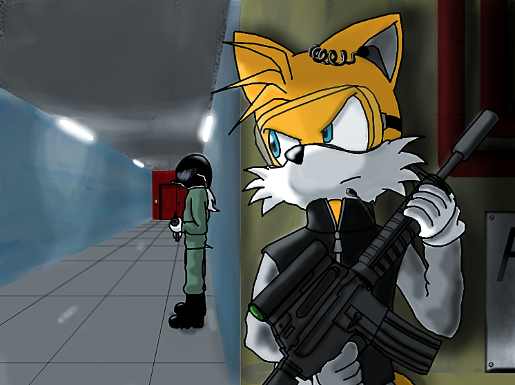

Hello and welcome to our site!
This site is about us and how we are making new exciting program, that could show our progress and experience without using AI really much.
Miles' Introduction
Hello, my name is Miles. You can also call me Miles Tails Delta-777 as full name or just Miles Cibis as my real name. I am a junior software developer, which loves programming on JavaScript and doing some funny stuff too.
I always loved developing software since I was a young kid, in 2013 my dad brought me my first computer from Daugavpils, Latvia and after I started to learn programming languages and developing my own video games.
Since I've started working on my video games, I started to learn more when I went to college. Now I have goal to create my own site or game, that can be made by our soul together.
My hobbies and interests:
- I love collecting video game consoles and computers for experiments. Have 27 consoles in my collection
- Playing on musical instruments, such as: piano and acoustic guitar.
- Learning programming languages and languages for the communication. I can speak English, Russian, Estonian, Ukrainian, Swedish, Finnish and a little bit of German.
- Still learning C#, JavaScript, C, GameMaker and HTML/CSS for my future career in software development.
- Playing a bunch of different video games, literally playing everything. And also doing critic reviews for the each game.
- Love all aviation stuff and my favourite aircraft is the McDonnell Douglas DC-10/MD-11
- My favourite video games are: Grand Theft Auto III, Grand Theft Auto: Vice City, Sonic Riders, and BeamNG.Drive.
Here you can also check my gallery, there you can see my famous photos, which was made by me:

[ Red's introduction ]
Hi hello greetings I'm other developer of this humble site, known as Red or Prism. However it's easy for you to refer to me as.
I'm one of the few people who take interest in indie games, software development and art. Either of those things are done horribly when it comes to actually doing something with them.
Like the other developer whom I consider a friend and a non-biological brother figure, I am also an Estonian. You aren't getting any other information from me.
My hobbies and interests:
- I take interest in consoles and their games, primarily in those that have been developed during the seventh generation (2005-2012).
- I LOVE, EMPHASIS ON LOVE, Y2K AESTHETIC AND WINDOWS 98 COMBINED. I WANT TO PASSIONATELY CONSUME IT WHOLE LIKE FOOD AND
- Sorry abt that moving on
- Like I've mentioned, I take interest in art, being an artist myself. I practice both digital and traditional art, albeit horribly.
- I'm a passionate writer, with a load on projects in progress. (They will never be finished.)
- I love machines. Need I say more?
- My top favourite games are: Pokemon HeartGold, Plants vs. Zombies, DOOM, and The Binding of Isaac 'that one shitty game'.
Below you can take a look at the images uploaded by me (Mainly by the other developer).